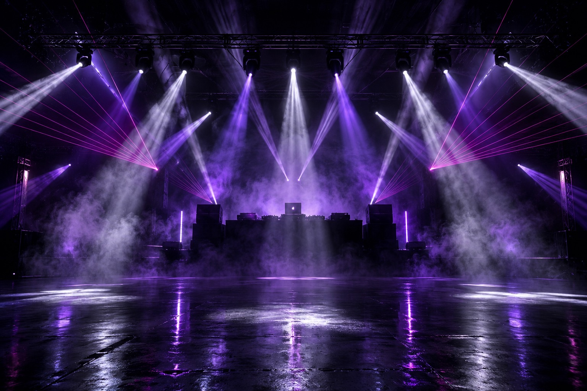
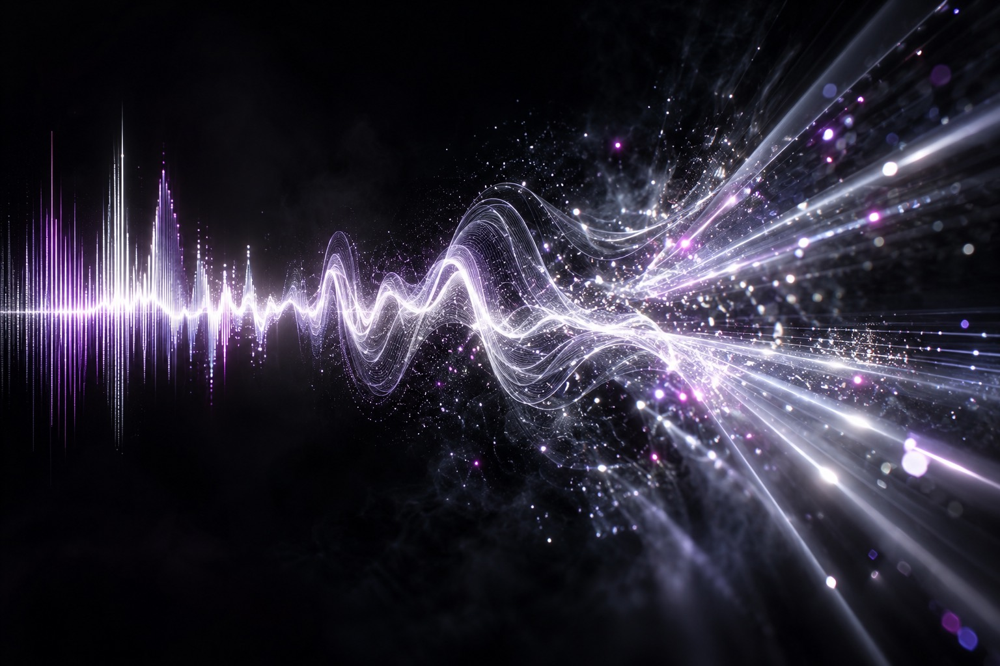

Open your set
Drop in an Ableton .als, or plain MP3, WAV, AIFF, M4A or FLAC files. Every song becomes part of the playlist.
RizzStudio reads your Ableton Live set, hears every kick, clap and drop, and programs a beat-accurate DMX light show for you. Ableton then plays it through TouchDesigner to Art-Net, sACN or DMX.

No cue lists or scene programming. RizzStudio works through your set the way a lighting designer would, at a speed no lighting designer can match.
Drop in an Ableton .als, or plain MP3, WAV, AIFF, M4A or FLAC files. Every song becomes part of the playlist.
Tempo, key, sections, drops, swing, silences and every kick, clap and hat are detected in under a second per song.
Your local Claude Code or Codex designs the cues: movers, gobos, colour, strobes, lasers, pixels and FX.
The show is exported into Ableton as DMX-over-MIDI, and TouchDesigner sends it to your rig.

RizzStudio splits each track into percussive and tonal parts and finds every hit, so the lights follow what's actually playing in the track.

A realistic 3D stage shows the exact output your rig will receive: moving heads that pan and tilt as the DMX says, beam cones, gobos on the floor, lasers, pixel bars and real flame and CO₂ footage.

The finished show is baked into Ableton as MIDI clips, so lights stay locked to the music even when you change tempo, jump scenes or mix live. You don't need a separate show computer or timecode.
Sections are split into 1–8 bar chunks, each with its own pattern, speed, sync, dimmer FX, gobo and colour.
Sudden cuts black the whole rig out for the gap and flash it back on the return, perfectly on beat.
Measures straight vs swung 8ths and 16ths per bar, and strobes, flicker and pixel chases follow the groove.
One-click Demucs setup splits drums, bass and vocals on the Apple-silicon GPU for cleaner light cues.
Thousands of fixtures from the Open Fixture Library, or profiles generated by AI from a datasheet.
Haze, CO₂, sparkulars, confetti and flames each get their own lane, with pyro safety channels locked by default.
Give the AI a direction and reference videos, and it borrows the palette, fixture use and pacing.
Virtual DMX patch, DMX monitor, per-group solo and mute, and a master blackout for live control.
Render any song or section to H.264 with captions, ready to send to promoters or post online.
RizzStudio is a macOS app that turns an Ableton Live set or audio files into a complete, beat-accurate DMX light show. It analyses each song, uses AI to program the lighting and exports the show back into Ableton as DMX-over-MIDI, so Ableton drives your lights through TouchDesigner to Art-Net, sACN or DMX.
Yes. RizzStudio is currently a free download for macOS from GitHub releases.
No. RizzStudio uses the Claude Code or Codex command-line tool you already have installed and signed in. Without either, a built-in rules engine still programs the full show.
Moving heads, RGB washes, strobes, blinders, lasers, pixel bars, LED walls and special effects such as haze, CO₂, sparkulars, confetti and flames. Fixture profiles from the Open Fixture Library map the show to each fixture's real DMX channels.
You can open plain MP3, WAV, AIFF, M4A or FLAC files, preview the show on the 3D stage and render it to video without Ableton. To run real lights from the show, Ableton plays the exported MIDI, or RizzStudio can output Art-Net directly in Perform mode.
macOS 14 Sonoma or later on Apple Silicon (M1 and newer).
Download RizzStudio for macOS, open your Ableton set and see your first AI light show in minutes.